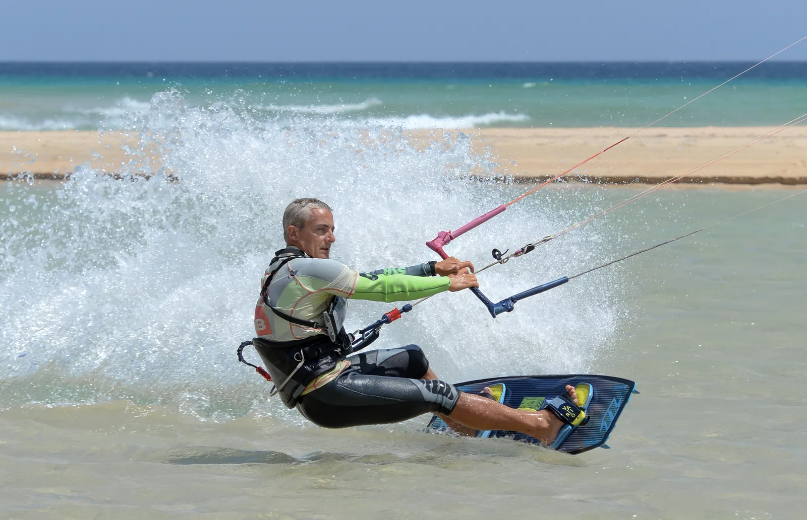
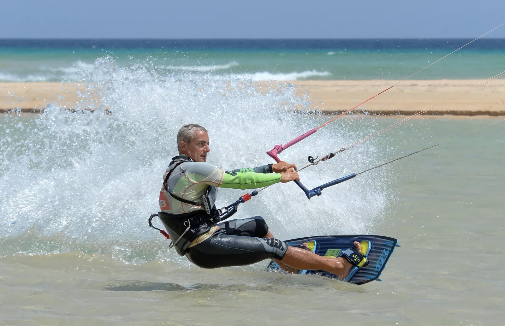
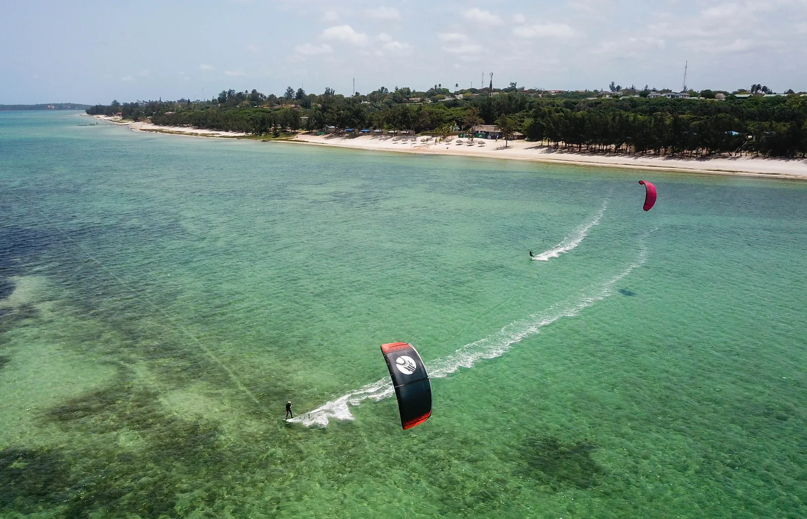
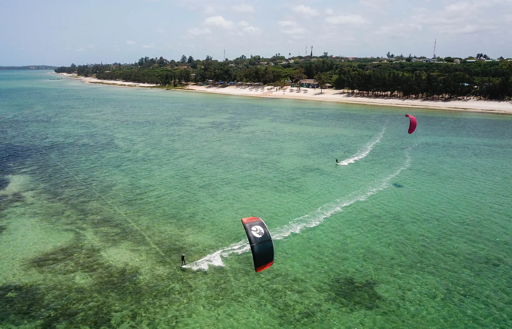
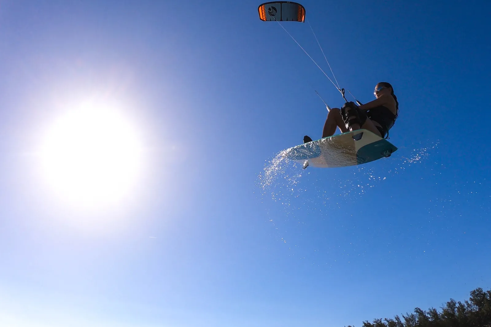
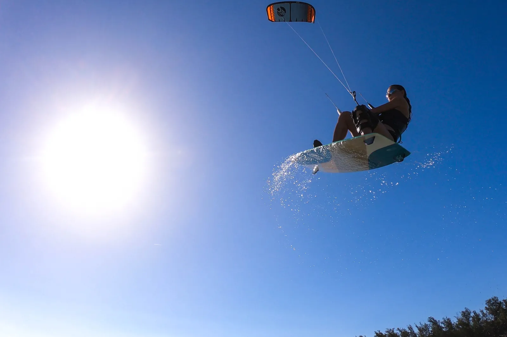

L'école de Kite
Professionnelle, sécurisée, fun et facile
Ecole de kite
Idéalement située sur le lagon, avec des vents side-on réguliers, l’école profite de conditions idéales pour apprendre le kite. Avec plus de 5 ans d’expérience d’enseignement du kitesurf en tant que moniteur IKO, nous proposons une pédagogie complète autour de ses standards. Ils garantissent un apprentissage en toute sécurité dans les meilleures conditions d’évolution pour les élèves. Plus d'info sur le spot Nous sommes équipés de radio pour vous permettre de rester en contact en permanence avec votre moniteur.
Débutants - initiation
Découvrez le matériel, les systèmes de sécurité, décollage et atterrissage, contrôle de l’aile complet en statique dans moins d’1m d’eau. Puis nous pratiquerons la nage tractée, le redécollage, les premiers démarrages en waterstarts et premiers bords dans la lagune.
Intermédiaire
Equipé de radio, améliorez votre position, le contrôle de vitesse, la descente et remonté au vent. Viendront ensuite les premières transitions et jibes pour ne plus s’arrêter lors des changements de direction. En fonction de vos envies nous pourrons approfondir vos connaissances en matière de sécurité, météo, connaissances des éléments naturels et technique pour renforcer votre autonomie à la navigation.
 

Navigation surveillée
A partir d’un certain niveau, votre progression passera par la pratique intense en semi-autonomie surveillée du bord de la plage, avec ou sans radio. Votre moniteur ne sera jamais bien loin pour votre sécurité et quelques bons conseils, sans dépenser plus qu’il n’en faut en cours de kite.
 

Avancés : Coaching
Pour tout rider autonome qui souhaite progresser : Sauts, figures, transitions, connaissances et réglages avancés de votre matériel, en Twintip (planches classiques), Strapless (planche de surf) ou foil, le kitesurf présente l’avantage d’une multitude de types de pratiques, adaptées aux conditions ou motivation de chacuns. Nous utiliserons les analyses vidéos, radios sur l’eau, vous serez encadré par un moniteur certifié OLK (One Launch Kiteboarding, le groupe de passionnés créé par Philippe Ancelin dédié à la progression en kite) OLK, le plus grand réseau français d’écoles à l’étranger : Plus d’info sur OLK OLK met à votre disposition des vidéos pédagogiques gratuites pour vous permettre de continuer à apprendre de chez vous. Les Tutos OLK.
Stage de progression
D’une durée d’une semaine en moyenne, adaptable en fonction de vos envie (nous n’oublions pas que vous êtes aussi en vacances), nous proposons un stage complet de perfectionnement en kite. Des réglages les plus pointus aux figures les plus « stylées », en passant par les apprentissages des sensations les plus infimes avec votre kite qui font toutes la différence, ce stage s’adresse aux passionné(e)s qui souhaitent démultiplier leur niveau de pratique : Briefings videos, multiples sessions filmées sur l’eau, debriefing vidéos et amélioration chaque jours de votre style sur l’eau.
 

l' Equipement Eleveight
Bilene Kite Center est partenaire Eleveight, la marque montante du kite, créée par des passionnés, pour des passionnés. Notre centre propose une gamme complète de kites, barres et boards du nouveau millésime, renouvelés chaque année. En 2022, le wing fait son entrée dans notre quiver. Plus d’infos sur Eleveight.